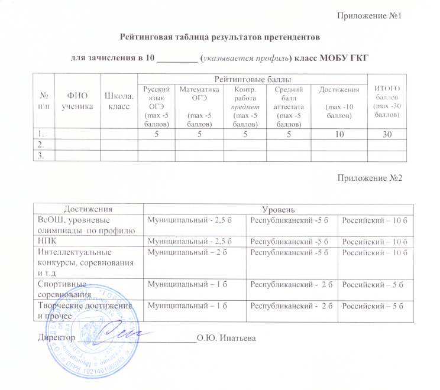
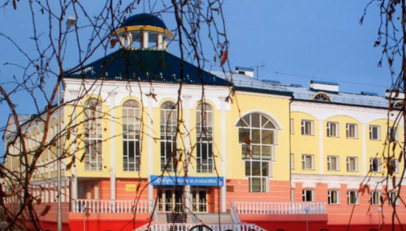

• технологический профиль — расширение предметов: математика, физика, информатика;
• социально-экономический — расширение предметов: география, обществознание;
• естественно-научный профиль — расширение предметов: химия, биология, физика
• гуманитарный — расширение предметов: история, обществознание, литература, английский язык
- достижения в олимпиадах, интеллектуальных и спортивных состязаниях, конкурсных мероприятиях в области искусства, научно-исследовательской деятельности, научно-технического творчества, спорта различных уровней (дипломы, грамоты) - за последние 2 года;
- результаты освоения образовательной программы по соответствующему(им) учебному(ым) предмету(ам) свидетельствующие о хороших и отличных знаниях по учебным предметам, изучаемым углубленно (аттестат об основном общем образовании)
- фамилия, имя, отчество обучающегося;
- дата рождения обучающегося;
- фамилия, имя, отчество родителей
- класс с углубленным изучением отдельных учебных предметов
- средний балл аттестата, итоговые отметки по предметам профиля, достижения в олимпиадах, НПК и т.д. за последние два года.
- 1 этап - проведение экспертизы документов;
- 2 этап - составление рейтинга учащихся;
- 3 этап - принятие решения о зачислении учащихся.
- отметки по русскому и математике на ОГЭ;
- отметки за контрольную работу Рособрнадзора по одному из соответствующих профилю учебному предмету;
- средний балл аттестата об основном общем образовании, исчисляемый как среднее арифметическое всех оценок аттестата;
- достижения в олимпиадах, интеллектуальных и спортивных состязаниях, конкурсных мероприятиях в области искусства, научно-исследовательской деятельности, научно-технического творчества, спорта различных уровней (дипломы, грамоты) - за последние 2 года - до 10 баллов (Приложение №2).
